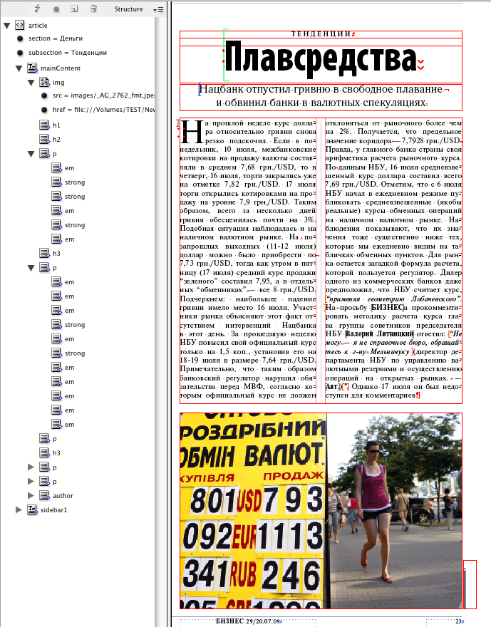
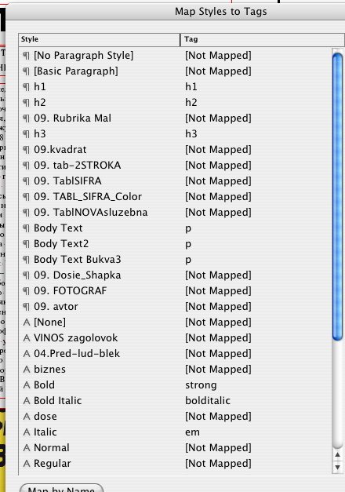
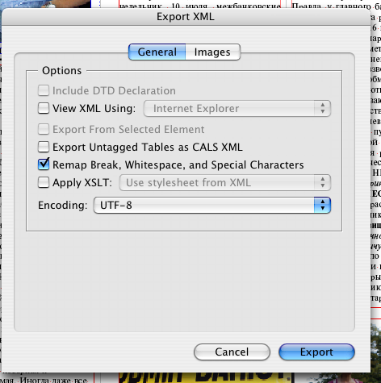
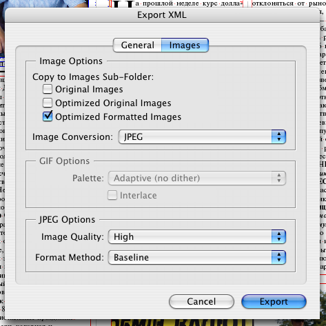
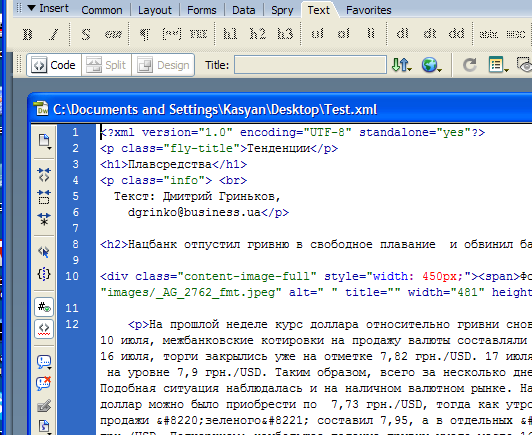
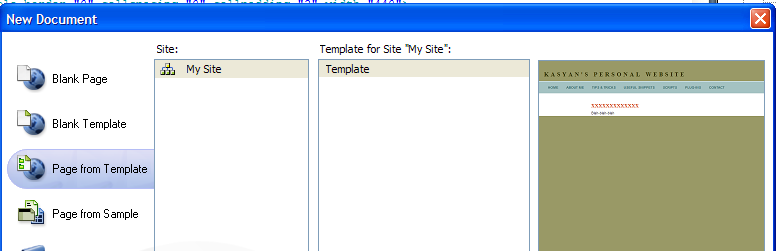
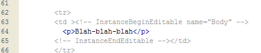

From print publication to web-page
Download sample files from here. There are two InDesign documents: Before and After. The Before.indd is a typical document we use in our current workflow; the After.indd has some xml-structure added using map styles to tags feature.
The document with xml-structure added

Map styles to tags dialog box

It is important that the main text should be in a single flow: use threaded text frames instead of separate ones. It is desirable that images were anchored objects in the text flow, otherwise you will have to move them manually in the structure pane.
When the document is ready I export the xml-file using the following parameters:

Export Optimized Formatted Images - ready for posting online.

Then I open the xml-file in Dreamweaver and copy everything except the first line.

Then I create a new page from template.

... and paste the contents into an editable region.

Finally I save the web-page and put it online.
Note: I have not applied any formatting to it by CSS style.